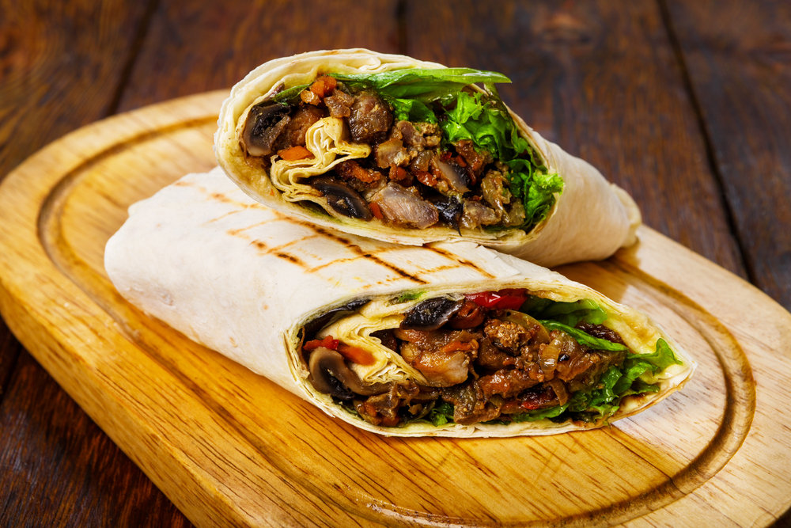
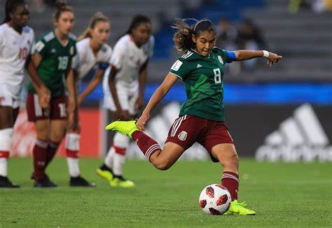
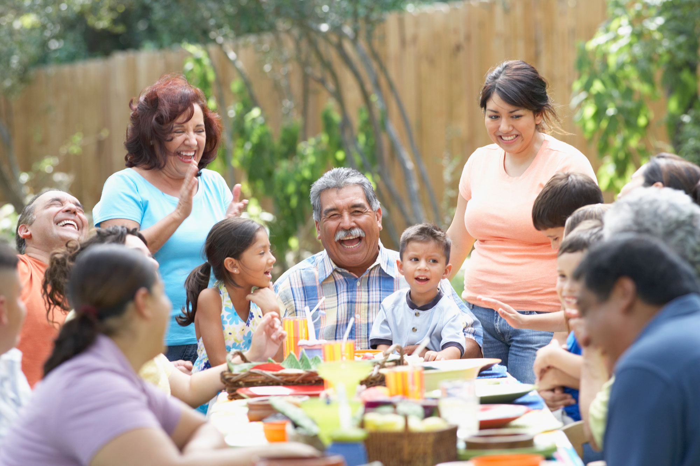

Mexico is a country with a rich culture that is affected by its
amazing history and nature. This text will give you some interesting insights
about Mexican culture: Food, social and sports.
Food in Mexico
Mexico is one of the countries in the world with the best
food culture. In fact, Mexico is considered to have the second
best food in the whole world. Mexicans are famous for
using a lot of seasoning in their food such as chili
powder, turmeric powder, garlic, paprika, cardamom and
more. They also use a lot of corn and avocado in their
cooking. Some of the world's most famous dishes are
Mexican. For example tacos, churros, and burritos.
The staple food of Mexico is of course corn. If there’s
something mexicans can’t live without, then it is
definitely corn. For many thousands of years people
in Mexico have eaten corn in many different ways. Two
of the most significant mexican way to eat corn are Hominy
and Masa. Hominy is corn that’s been treated with alkali
that removes germs and hulls. Masa is a bread made of
Hominy and other ingredients. Hominy can be used in soups,
and Masa as a side dish.
The normal time for eating lunch in Mexico is usually between 2 and 3pm and they eat very slowly. They call it “La hora de la comida”. It is later than most countries in the world. It’s the same with dinner, which Mexicans usually eat around 9pm. Often family and friends eat together and the guests are expected to arrive at least 30 minutes later than the planned time.

Sports
Mexican people of all ages love to play and watch football,
or fútbol as it's called in spanish. Football has been the
biggest sport in the country for many generations, and is
nos more popular than it has ever been in Mexico. Many
people even see their favorite football team as their
religion. Even though football is the most popular sport,
their national sport involves horses and is called Charríera.
Football culture in Mexico is known for being very hectic,
aggressive, and controversial. But this is because all the Mexican
fans are ready to do anything for their teams. They
are always engaged with their favorite team. As a result
of the football's popularity, Mexico owns one of the top
ten best football leagues in the whole world, Liga MX.
More than 41% of Mexicans watch sports every day. Not only
because it’s entertaining, but also because watching sports
is an excuse to be social and meet friends and family. Their
passion for sports is brought further to the new generation.
That’s why the kids in Mexico support the same team as
their older relatives.

Social
An average mexican is a lot more talkative and social
than an average swede. It’s because Mexicans spend a lot of time
with family and friends in general. In Mexico, family is very
important. Most families even live in the same house with many
relatives. Mom, dad, siblings, grandma, grandpa etc.
Mexikans are used to talk to each other in a friendly way.
For example, they say “we’ll see” or “maybe” instead of saying
“no” because it doesn’t sound rude. Another way to communicate
with each other is by using hand gestures and physical contact.
But not hugging, because it’s reserved for family.
In Mexico, religion is a big part of the everyday life.
Most people are Catholics with some features from old
indigenous religions. Over 80% of the population consider
themselves as Catholics. The high percentage of religious
people has affected the language they use in Mexico.
Several everyday phrases are related to god. For example,
"Si Dios quiere” (God willing), “Dios te bendiga”
(God bless you) and “Gracias a Dios” (Thank God).

Social
An average mexican is a lot more talkative and social than an average swede. It’s because Mexicans spend a lot of time with family and friends in general. In Mexico, family is very important. Most families even live in the same house with many relatives. Mom, dad, siblings, grandma, grandpa etc. Mexikans are used to talk to each other in a friendly way. For example, they say “we’ll see” or “maybe” instead of saying “no” because it doesn’t sound rude. Another way to communicate with each other is by using hand gestures and physical contact. But not hugging, because it’s reserved for family. In Mexico, religion is a big part of the everyday life. Most people are Catholics with some features from old indigenous religions. Over 80% of the population consider themselves as Catholics. The high percentage of religious people has affected the language they use in Mexico. Several everyday phrases are related to god. For example, "Si Dios quiere” (God willing), “Dios te bendiga” (God bless you) and “Gracias a Dios” (Thank God).